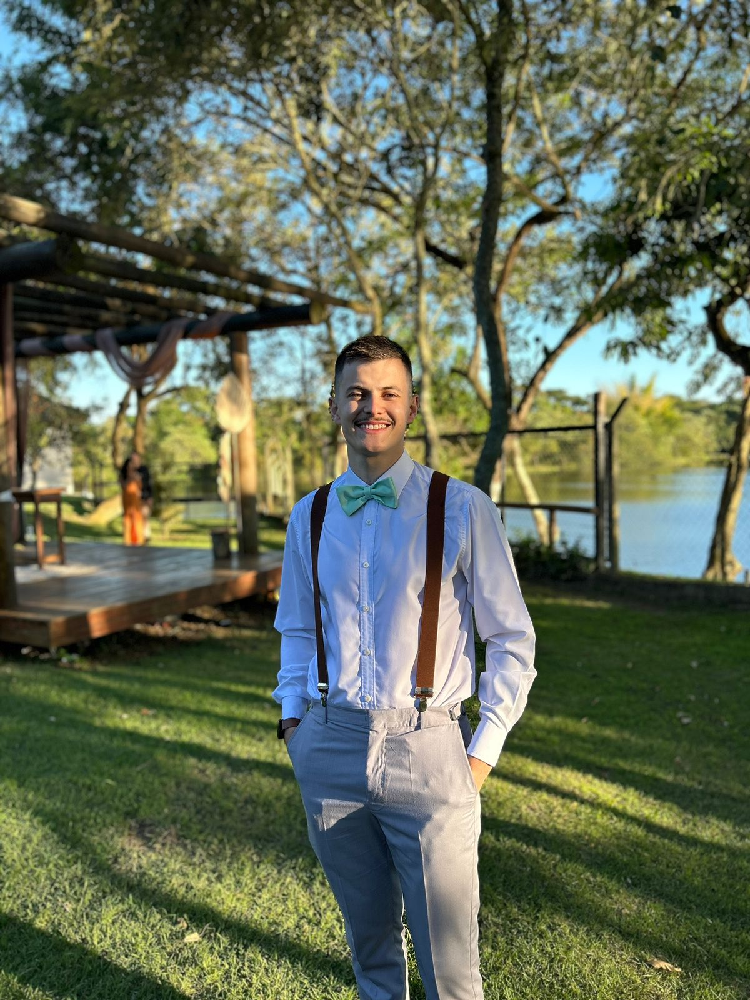

Murillo Alves Couto

Summary
Actually working as an Air Traffic Controller in Brazilian Air Force at São Paulo Aproach Control
and starting my studies to be a full stack developer.
Education
- High School - Colégio Embraer (2012-2014)
- Air Traffic Controller - Escola de Especialistas da Aeronáutica (2017-2019)
- Python Course - Curso em vídeo (2022)
- Technology Formation - DNC Group (2023-Present)
Work Experience
- Air Traffic Controller - Brazilian Air Force
June 2017 - Present
- Maintain the traffic separation inside an area that is consider the most complex and busy in Latin America
- Give instructions, flight and meteorological informations to the approach and depatures flights that includes Guarulhos, Congonhas and Campinas airports
- Guarding commander managing the subordinates in order to maintain the security of the military facility
Skills
- Organizational skills: ★ ★ ★ ★
- Communication skills: ★ ★ ★ ★
- Decision-making skills: ★ ★ ★ ★ ★
- Detail oriented skills: ★ ★ ★ ★
- Math skills: ★ ★ ★
- Problem-solving skills: ★ ★ ★ ★
- Teamwork: ★ ★ ★ ★ ★
Awards and Certifications
- On-board Anti-Colision System (ACAS II) - Brazilian Air Force (November - 2019)
- Sargeant Especialization Course - Brazilian Air Force (December 2019)
- Level Bust - ICAO (October - 2020)
- Mach Number Technique - ICAO (October - 2020)
- Inside ATM - ICAO (November - 2020)
- Fatigue Awareness for ATC - ICAO (November - 2020)
- Stabilised Approaches - ICAO (November - 2020)
- Continuous Descent Operations Refresher for ATCS - ICAO (December - 2020)
- Introduction to Safety Nets - ICAO (December - 2020)
- AVE 1100 English for Air Traffic Control - Embry-Riddle Aeronautical University (December - 2021)
Other
© Murillo Alves Couto. All rights reserved.